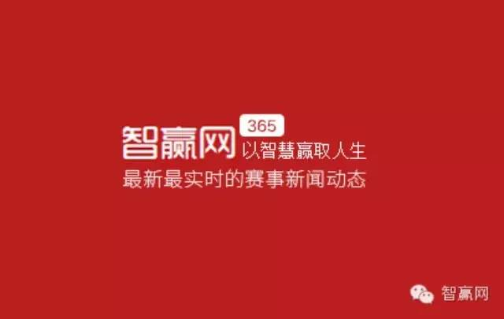

星期六 22:49

|
前言：任飞扬，智赢网现任主编，一个来自山城重庆的漂亮姑娘，虽然年龄不大，但对于足球的热爱那是一般汉子们都比不了的：从98年的法兰西到14年的巴西，从欧洲五大联赛到甲A、中超，从网易、ESPN到智赢网，飞扬的故事还在继续，有这样一位美女主编，智赢网的用户其实可以很幸福……
我和大多数女孩子一样，爱逛街，爱美食，爱电影，比她们更加“女汉子”一点的是，还爱足球。对许多事，讲求“感觉”，对工作亦如是。有人说，如果你的爱好亦是你的职业，那便是人生的一大幸事。爱旅行的想当冒险家，吃货想当美食家。而对于爱足球的我来说，加入“智赢”这个大家庭，就是感觉对了，一切都是那么快乐的事。
1998年在电视机前第一次看世界杯，2000年第一次去现场看甲A，2002年发表第一篇关于足球的稿子……打开记忆的匣子，太多回忆涌入脑海，足球伴我成长，走过我的青春，这一路，有笑有泪有明媚有灰暗。
自由撰稿人，意味着自由而不安，我原以为我会以码字为生。那时候，给一些都市杂志写稿，把自己关在昏暗的屋子里，写别人的故事，馥郁的，没有一点光亮，几乎把我侵蚀得越来越灰暗。终于，2002年，周围热闹起来——中国队进世界杯了。那是我最投入的一届世界杯，发表了一篇又一篇的足球评论。我想无论现在或是以后，都不会有那样热烈而纯粹的投入，因为热爱，所以无畏。
给网易体育供稿的日子里，把我历练出了一颗强大的心脏和有一点神经质的敏感神经。无论是足球述评，还是球员采访，甚至半夜守比赛，忙得飞起来。有一次由于稿子里出了点小错，被网友一顿狂骂。责编给我打电话让我赶紧改稿子，当我看见那些难看的评论，差点哭出来。从这以后，我审稿子越来越小心谨慎，简直有点强迫症，不太谦虚地说，正因为这样，让我在以后的工作中几乎做到了零出错率。贺炜诗人说过，做足球解说不要怕被人骂。我要点一百个赞，现在的我暂时修炼不了铜墙铁壁的心脏，如果你们在智赢网的稿子中发现了小错，可不可以温柔的帮我指正：P
后来我在ESPN中文网做编辑，本来以为可以安定下来，但现实总是残酷的，随着2013年公司公司的发展转型，ESPN中文网成为历史，许多人各奔东西，我也包括其中。性格中的某些因素决定我是个不喜欢变化的人，面对这种变故一时间茫然无措。去旅游，把心荡空，就这样走走停停过了一段日子，眼看以前的同事或另谋高就或转行，而我，依然还在原地踏步。正考虑将来是否要抛开足球做些其它事情的时候，世界杯又如火如荼地开始了。
似乎我工作上的新开始总是与世界杯有关。这届世界杯尤其火，不懂球的人们都热火朝天谈论今天谁对谁，谁赢谁，原来他们都有参与“竞彩”，于是，我也跟着大伙稀里糊涂买足彩，自以为懂球的我偏偏奈何每晚都要上“天台”。正准备痛下决心“剁手”时，通过ESPN的老同事老张认识了“大力水手”，同时也知道了智赢网。
大力水手在我看来那就是一个超级超级牛的神人，看球的境界还可以像他这样。再接下来大家也应该猜到了，我加入了智赢网这个大家庭，成为智赢网的首任主编，被大家抬爱为美女主编。
世界杯的喧嚣过后，智赢网开始专注改版，上线各个新栏目，我有幸从一开始就参与并见证它的成长。在改版初期，我和产品总监因为方案内容掐过大大小小的架，但是很快又会笑闹成一片，正是对工作的那份严谨和热爱，又让我们相互理解并欣赏。无论是大名鼎鼎的“水手”，还是默默无闻技术开发的工程师们，都倾注了太多心血，台前所能看见的一切，都是幕后一点一点拼缀而成。工作时充满正能量，业余时踢球唱歌，智赢网就是这么一个能集兴趣爱好又施展才华的平台。
在这个团队里，不仅是以一种非常舒服的状态开展工作，足球和竞彩，是爱好，也是游戏，在这里更加体会到的是以一种向上的精神，所谓人生难得几回搏。智赢的宗旨是，让大家一起智赢人生。在我看来，这是一群有梦想的家伙在做一件有意义的事，无论结果如何，这个过程已然值得。
智赢彩票--以智慧赢取人生 |